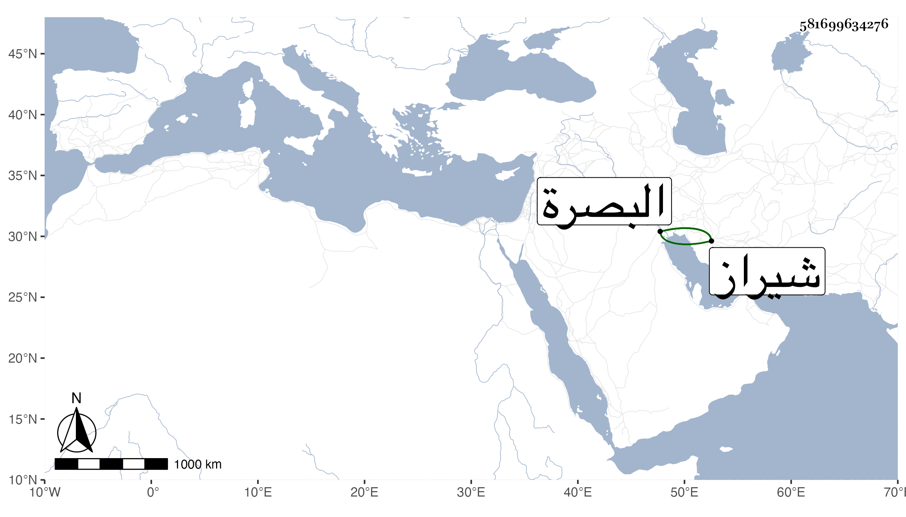

0902Sakhawi.DawLamic.ITO20230111-ara1.EIS1600.581699634276
Biography ID: 581699634276
إبراهيم بن شاه رخ بن تيمورلنك وباقي نسبه في جده السلطان أمير زاه ابن القان معين الدين بن الطاغية الشهير استقر به أبوه في شيراز وأعمالها فظهرت له نجابته وعدله فأضاف إليه ما والاها وحسنت سيرته في رعيته ثم بعد مدة أرسل عسكرا إلى البصرة في شعبان سنة ثمان وثلاثين وثمان مائة فملكوها له ثم وقع الاختلاف بينهم وبين أهلها فاقتتلوا في ليلة عيد الفطر منها فانهزم عسكر إبراهيم وقتل منهم عدة وخافوا من ملكهم فلم يلبث أن ورد عليهم موته وأنه مات في رمضان منها كذا قيل ولكن انما أرخ شيخنا موته في رمضان من سنة تسع وثلاثين فالله أعلم وسر أهل البصرة بذلك سرورا عظيما ووجد عليه أبوه وأهل شيراز وكان شابا جميلا من عظماء الملوك مع فضيلة تامة وخط بديع يضرب بحسنه المثل بل قيل انه يوازي خط ياقوت وقد ترجمه شيخنا باختصار فقال كان فاضلا حسن الخط جيدا ملك البصرة . قلت وسمعت من يذكره بالجميل .
